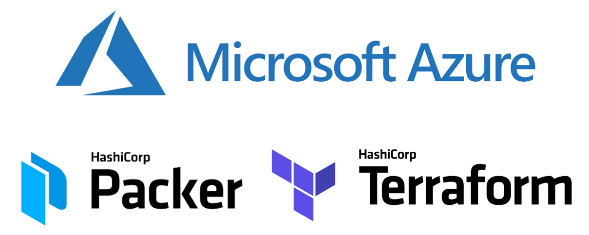

This is a simple Nginx web server hosted on Azure IaaS powered Virtual Machines
with infrastructure deployed as IaC through Packer and Terraform

The source code for this project can be found in
Github